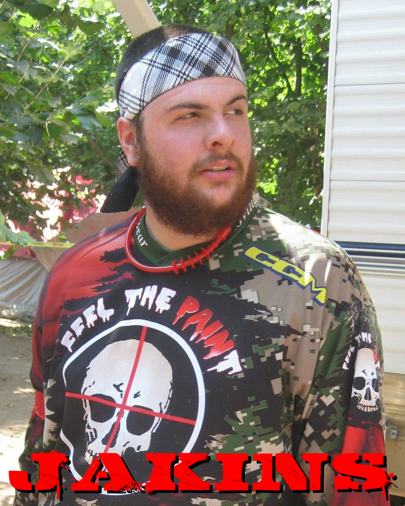

James Jakins

Provo, UT

3
Planet Eclipse Etha
VForce Grill

Vidjah games. Filmmaking. Food? Does eating count as a hobby?

I don't have one yet

I'm an accountant for an import/export company.
A friend, who had done nothing but talk up the sport, invited me to play some speedball a few years ago.
He had an old marker and some gear he let me use.
I think I managed to get two good shots in all day.
It was awesome.
A few months later Spencer Sego invited me to play some woodsball.
I bought a cheap marker that night, and that weekend played again.
I haven't looked back since.